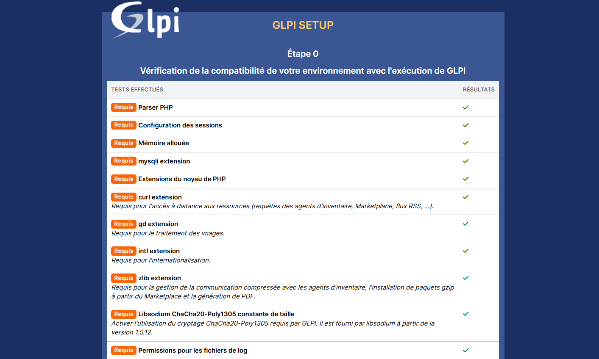
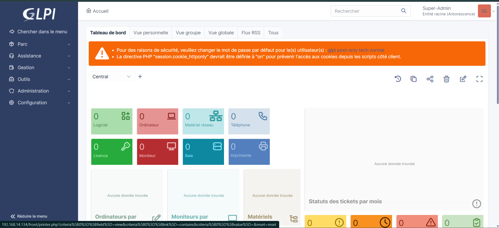

#!/bin/bash
echo "=== Installation automatique de GLPI ==="
# Variables
GLPI_VERSION="10.0.20"
DB_NAME="glpi"
DB_USER="glpiuser"
DB_PASS="admin"
SERVER_NAME="glpi.localhost"
# Mise à jour du système
apt update && apt -y upgrade
# Installation Apache
apt install -y apache2
systemctl enable apache2
systemctl start apache2
# Installation dépendances PHP
apt install -y lsb-release ca-certificates apt-transport-https curl
curl -sSLo /tmp/debsuryorg-archive-keyring.deb https://packages.sury.org/debsuryorg-archive-keyring.deb
dpkg -i /tmp/debsuryorg-archive-keyring.deb
echo "deb https://packages.sury.org/php/ $(lsb_release -sc) main" > /etc/apt/sources.list.d/php.list
apt update
apt install -y php8.3 php8.3-cli php8.3-common php8.3-mysql php8.3-gd php8.3-intl \
php8.3-xml php8.3-mbstring php8.3-curl php8.3-zip php8.3-bz2 php8.3-ldap \
php8.3-opcache php8.3-exif
# Redémarrage Apache
systemctl restart apache2
# Installation MariaDB
apt install -y mariadb-server
systemctl enable mariadb
systemctl start mariadb
# Création base de données GLPI
mysql <<EOF
CREATE DATABASE $DB_NAME CHARACTER SET utf8mb4 COLLATE utf8mb4_unicode_ci;
CREATE USER '$DB_USER'@'localhost' IDENTIFIED BY '$DB_PASS';
GRANT ALL PRIVILEGES ON $DB_NAME.* TO '$DB_USER'@'localhost';
FLUSH PRIVILEGES;
EOF
# Téléchargement GLPI
cd /tmp
wget https://github.com/glpi-project/glpi/releases/download/$GLPI_VERSION/glpi-$GLPI_VERSION.tgz
# Décompression
tar -xvzf glpi-$GLPI_VERSION.tgz
mv glpi /var/www/
# Droits Apache
chown -R www-data:www-data /var/www/glpi
chmod -R 755 /var/www/glpi
# Activation rewrite Apache
a2enmod rewrite
# Virtual Host GLPI
cat <<EOF > /etc/apache2/sites-available/glpi.conf
<VirtualHost *:80>
ServerName $SERVER_NAME
DocumentRoot /var/www/glpi/public
<Directory /var/www/glpi/public>
Require all granted
RewriteEngine On
RewriteCond %{REQUEST_FILENAME} !-f
RewriteRule ^(.*)$ index.php [QSA,L]
</Directory>
</VirtualHost>
EOF
a2ensite glpi.conf
a2dissite 000-default.conf
# Sécurisation cookies PHP
sed -i 's/;session.cookie_httponly =/session.cookie_httponly = On/' /etc/php/8.3/apache2/php.ini
# Redémarrage Apache
systemctl reload apache2
echo "=== Installation terminée ==="
echo "Accède à GLPI via : http://$(hostname -I | awk '{print $1}')"
echo "Base de données : $DB_NAME"
echo "Utilisateur DB : $DB_USER"
sudo apt install php-intl -y
sudo systemctl restart apache2Id : glpi
Mdp : glpi
Et on arrive sur l'interface de GLPI
